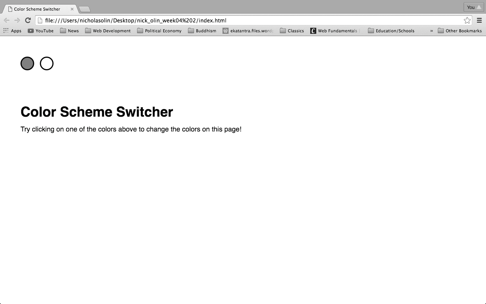
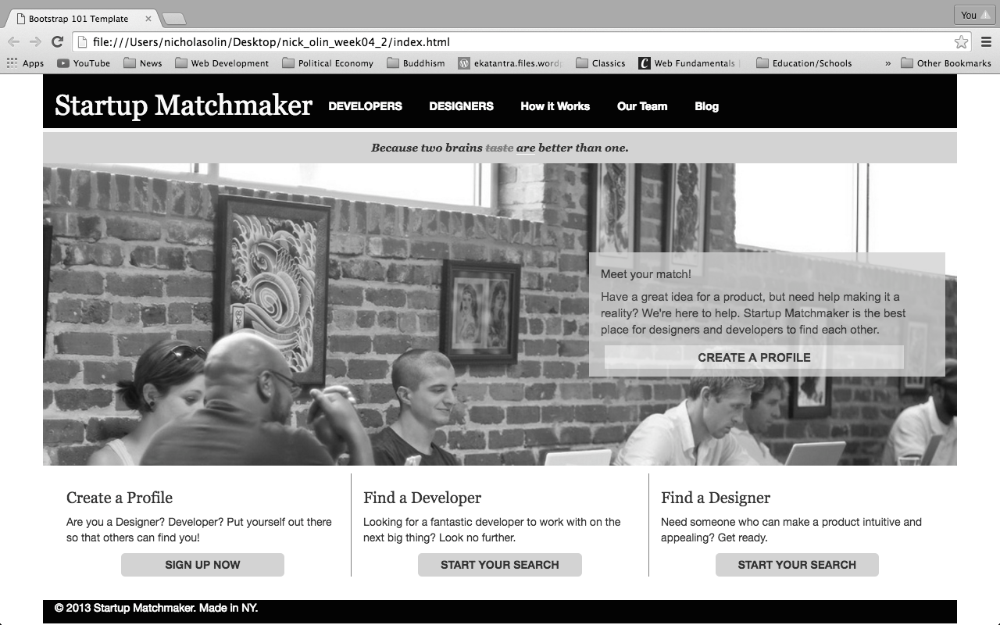
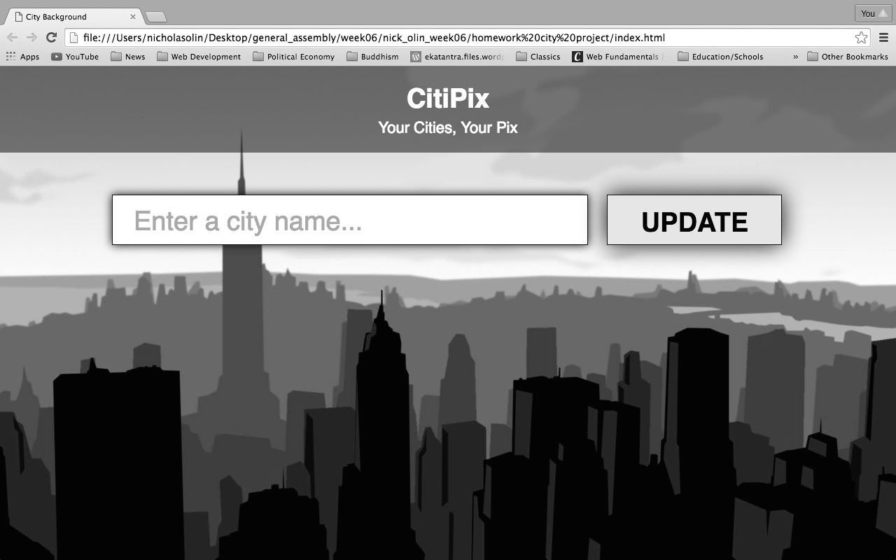
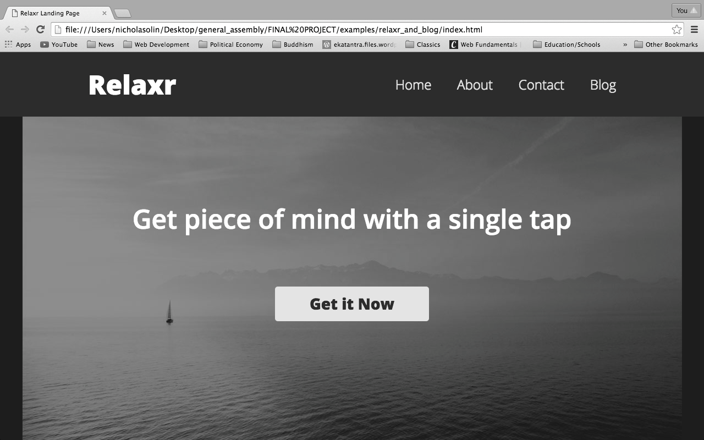
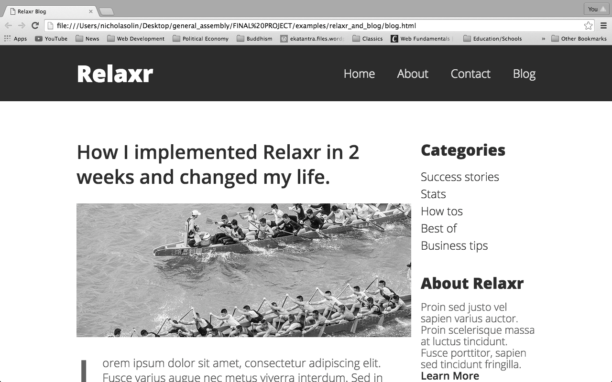
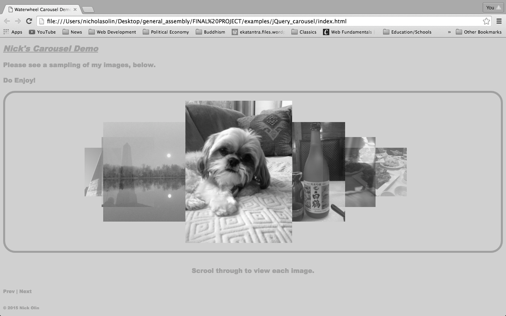

I'm a content management professional with experience in the curation and licensing of digital images for the academic publishing industry. I am studying front-end web development to deepen my engagement with digital publishing.
I came to publishing by accident really. I was finishing up a Bachelor of Arts in Classical Studies at Haverford College, and I began looking at career guides to figure out what my next steps would be after graduation. I came upon a career guide for publishing that listed a number of reasons why you might consider trying to work in the industry. Two points stuck out for me:
Just change Ancient Roman for Ancient Greek history, and you can basically describe where I was at the end of college.
Please see my Cirriculum Vitae for a complete breakdown of my educational experience.
And please see the following examples of my coding work:
     